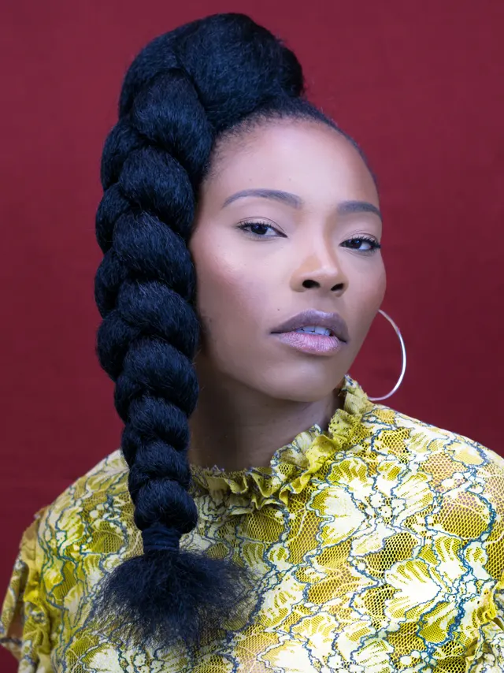
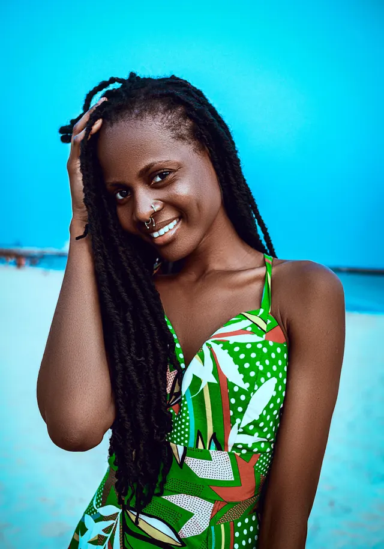
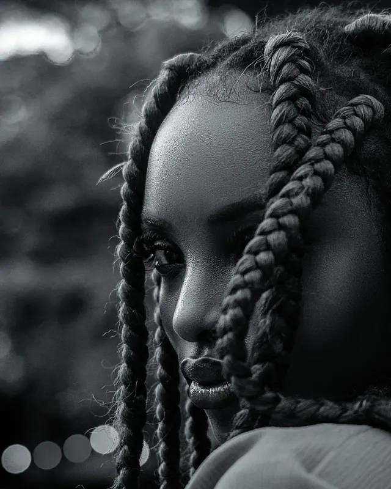
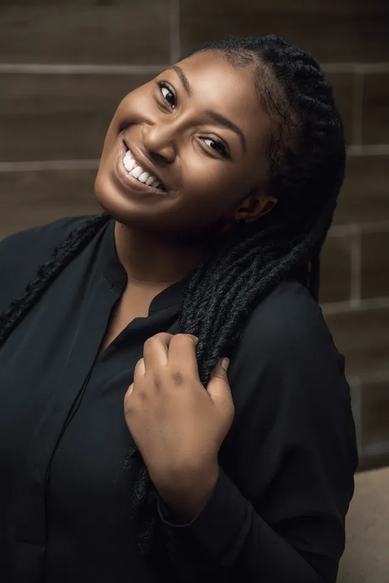
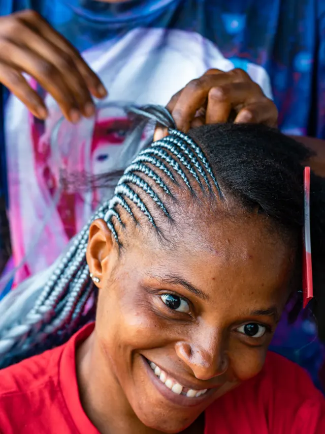
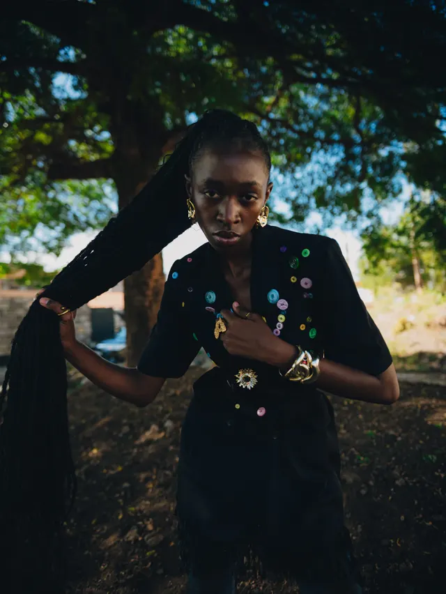

LE CARNET D’INSPIRATIONS
Mille textures.
Une seule vous.
Des coiffures qui inspirent. Des détails qui font tilt.
Trouvez le style que vous aimeriez explorer avec nous.
Votre prochain look commence par une envie.
LE CARNET / 11 INSPIRATIONS11 inspirations affichées
 Box braidsDes longueurs, du caractère.
Box braidsDes longueurs, du caractère.
 Nattes colléesDes lignes qui vous dessinent.
Nattes colléesDes lignes qui vous dessinent.
 Afro au naturelLibre, tout simplement.
Afro au naturelLibre, tout simplement.
 Vanilles & twistsLa beauté des textures.
Vanilles & twistsLa beauté des textures.


Tresse sculpturaleL’audace en signature.

Locs & libertéUne allure bien à vous.

Tresses épaissesUne présence singulière.

Tresses au quotidienLe style en mouvement.

L’art du tressageUn héritage vivant. Twists en douceurUn classique réinventé.
Twists en douceurUn classique réinventé.


Braids en mouvementL’allure au quotidien.Ces photos sont des inspirations, et non des réalisations du salon. Crédits photos